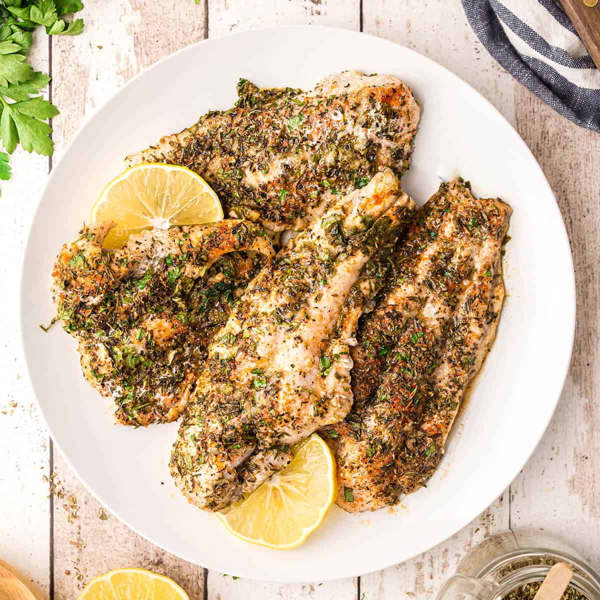

Baked catfish

Description
Baked catfish is an easy recepie yet tasty that can be made relatively fast and it's ingredients are
available in most stores.
The recepie is quite simple, as you just have to do some preparation then wait until it is baked ready.
Ingredients
- Catfish fillets
- Lemon
- Almond
- Green olives
- Olive oil
- Salt and pepper
- Rosmery
- Thyme
Steps
- Put a baking sheet onto a baking pan and lay out as many catfish fillets as you would like to bake
- Pour some olive oil on top of the fish
- Sprinkle thyme evenly on the fish
- Add fresh rosmery to the pan (if you don't have fresh one you can sprinkle dried one directly onto the
fish)
- Add salt and pepper to your liking
- Pour almond and olives onto the fish and into the pan
- Add a few slices of lemon on top of the fish fillets
- Cover the pan with aluminium foil and put it to the oven for about 45 min at 200 celcius degree
- Take off the aluminium foil and bake it for 15 minutes (if you have a grill setting it is a good idea to
switch to that)